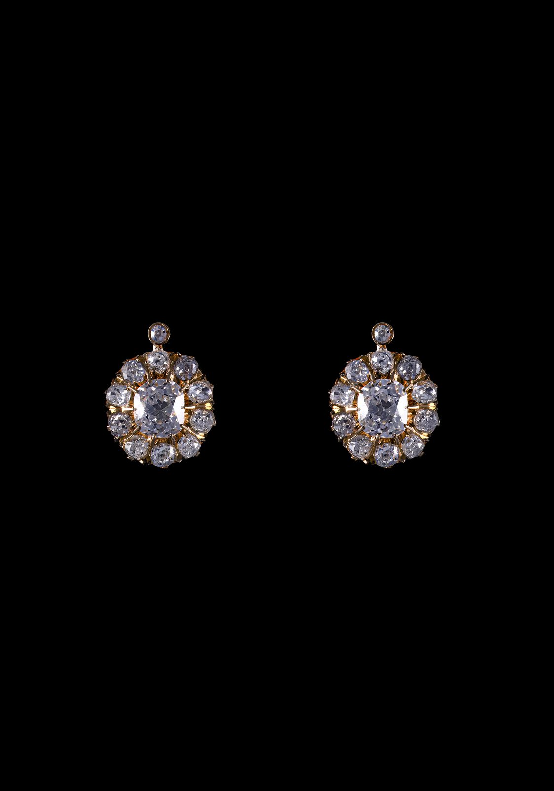

19th Century
Old Mine-Cut Diamond Earrings, 4ct
Antique 18k yellow gold earrings with 4ct of old mine-cut diamonds. Portuguese work, late 19th century.
- Date & origin
- Late 19th century · Portuguese
- Era
- 19th Century · 1800 – 1899
- Category
- Earrings
- Price
- Price on request
Condition report available on request · Insured, tracked worldwide shipping